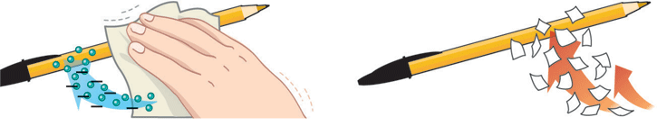

KORRONTE ELEKTRIKOA (1/3)
1. KORRONTE ELEKTRIKOA
IKASI:
Dakizun bezala, egunero erabiltzen ditugun hainbat eta hainbat aparatuk elektrizitatea behar dute funtzionatzeko. Badakizu, halaber, aparatu horiek ibiltzeko, zirkuitu elektrikoetatik korronte elektrikoak joan behar duela. Korronte elektrikoa materiak dituen elektroien mugimenduak eragiten du. Gogoratu materia atomoek osatzen dutela, eta atomo horietako bakoitzak partikula subatomikoak dauzkala, alegia: atomoaren nukleoan dauden protoiak (karga positiboa daukate), neutroiak (karga neutroa) eta nukleoaren inguruan bira egiten duten elektroiak (karga negatiboa).
Adibidez, paper zati batzuk mozten baditugu eta, jarraian, eskuekin bolaluma bat gogor igurtzi eta paper zatietara hurbiltzen badugu, zer gertatzen da?
Kasu honetan, bolaluma igurztean, karga negatiboko elektroiak garraiatzen dira, eta, bolalumak, paper zatietara hurbilduz gero, karga positiboko protoiak erakartzen ditu, beraz elektroiak eta protoiak berrantolatzen dira. Pausaguneko elektrizitatea da hori, alegia, elektrizitate estatikoa.
Orain, egin zuk proba; hurbildu globo bat buruko edo besoko ileetara. Zer gertatzen da? Zergatik?
Beraz, material eroale batek elektroien mugimendua ahalbidetzen duenean, korronte elektrikoa sortzen ari da. Hala ere, material isolatzaileetan, ez dago korronte elektrikoaren fluxurik.
Birpasatu kontzeptu hauek, animazio honen bidez: Atomoa eta karga elektrikoa
 JARRI PRAKTIKAN:
JARRI PRAKTIKAN:
 Egizu klik hemen korronte elektrikoari buruzko ariketa batzuk egiteko
Egizu klik hemen korronte elektrikoari buruzko ariketa batzuk egiteko
 HAUSNARTU:
HAUSNARTU:
Zergatik ematen dizu, batzuetan, objektu edo pertsona bat ukitzeak karranpa? Azaldu zure hitzekin eta idatzi klaseko blogean.